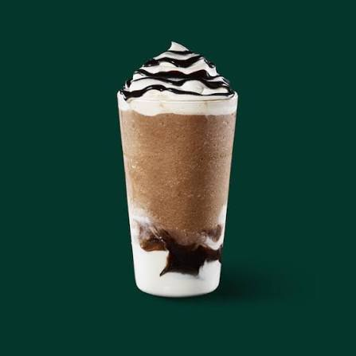

Thoughtful cups
We make each drink with care, so your everyday favorite always feels like yours.
A PLACE TO FEEL GOOD
It’s a warm hello on a busy morning. A familiar place to meet. A little moment that belongs to you.
Find your favorite
OUR REASON FOR BEING
We believe a great cup can make the everyday feel special. Since opening our doors, we’ve set out to create a welcoming place where people can connect over thoughtfully made drinks.
Every visit is an invitation to pause, catch up, discover something new, or simply enjoy a moment to yourself. However you take your coffee, there’s a seat here for you.
THE LITTLE THINGS MATTER
We make each drink with care, so your everyday favorite always feels like yours.
Our doors are open for a quick hello, a long catch-up, or a quiet moment.
It’s the small rituals and the people we share them with that make a day.
YOUR NEXT FAVORITE IS WAITING